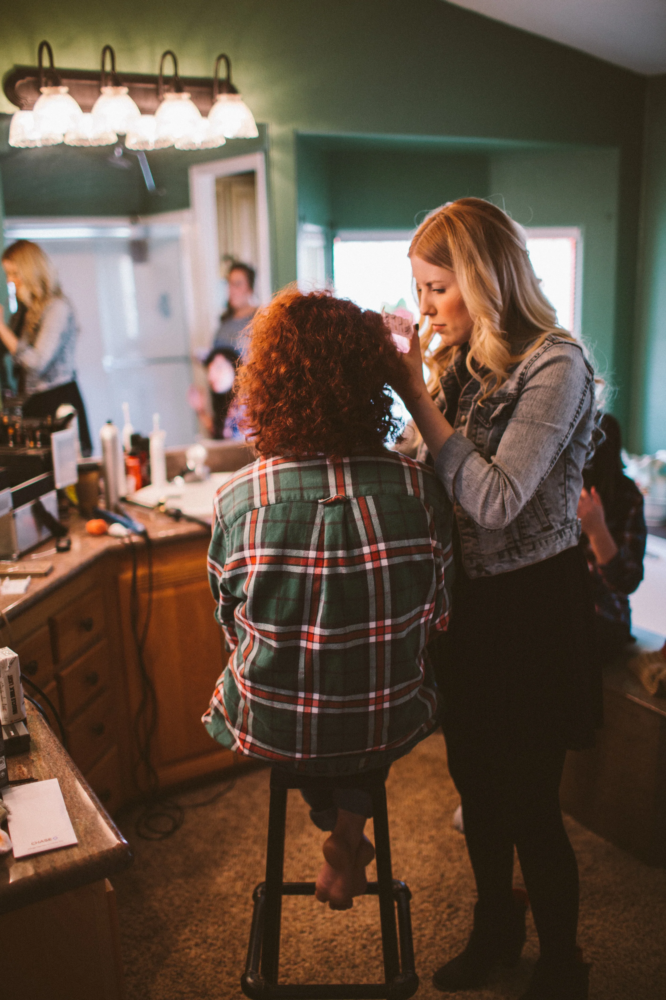

Hello friends! I'm Kendal. I currently live in the Pacific Northwest with my handsome husband, sweet pup Macy, sassy cat Lucy, and in July- our first baby! I've been a hair and makeup artist for over 7 years. As with most artists in my field, my love for hair and makeup began when I was quite young. I've always been enchanted with the way the right hair and makeup can fill a woman with confidence in a matter of moments, and the way characters are brought to life in film and television through their look. After completing cosmetology school in 2009, I began working in the salon immediately. While I loved working behind the chair, my truest passion is formal hair styling and makeup. I love fashion and education and I aim to stay current in both.
Aside from being in the beauty industry, I'm a cooking, baking, craft loving, homebody. If you're visiting my site for hair and makeup purposes, you might notice things have changed a bit! While I'm still an active artist, growing a tiny person has encouraged me to nurture my other loves- and write about them along the way! My blog will now feature a variety of things, but as always, please feel free to continue sending inquiries about hair and makeup services.